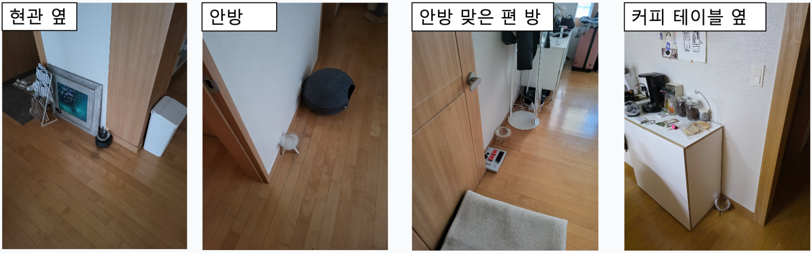
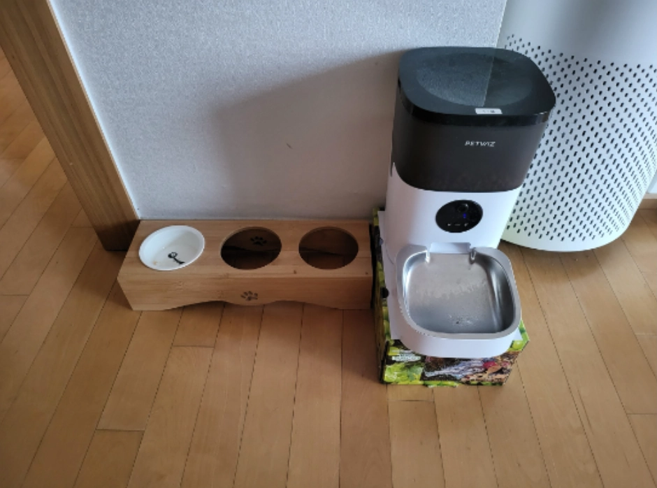
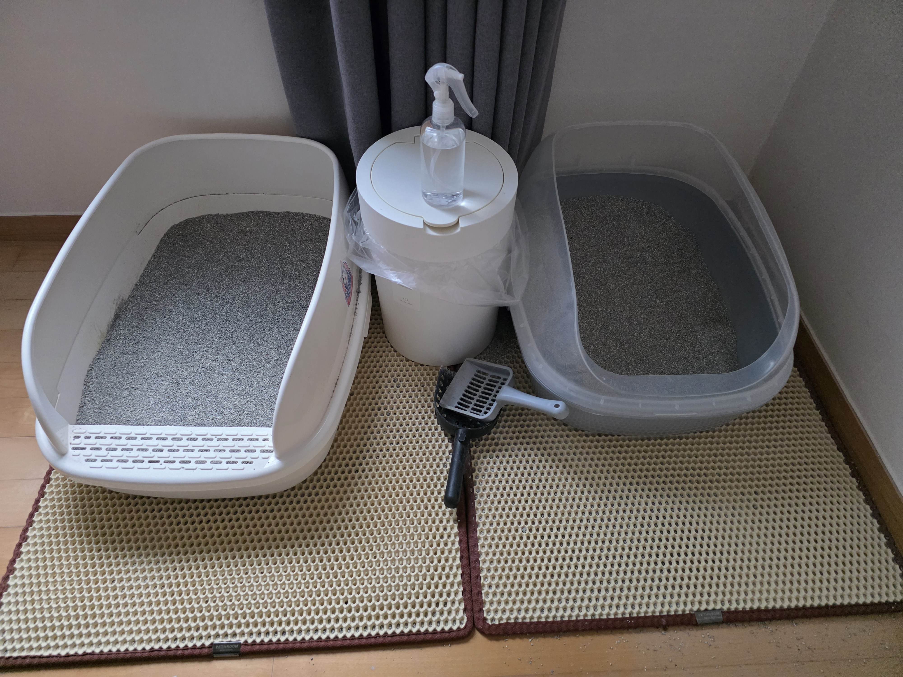
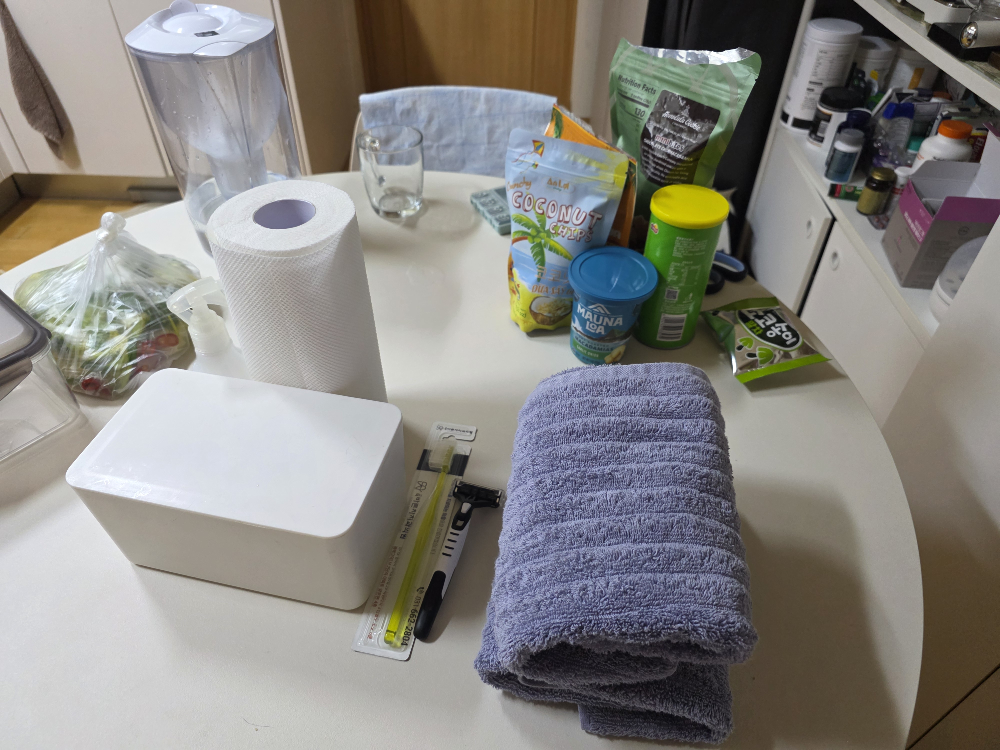
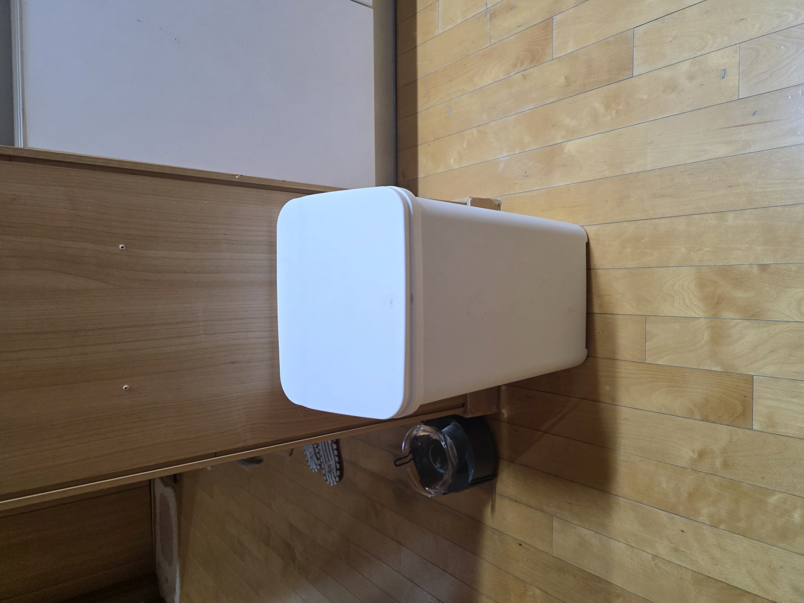
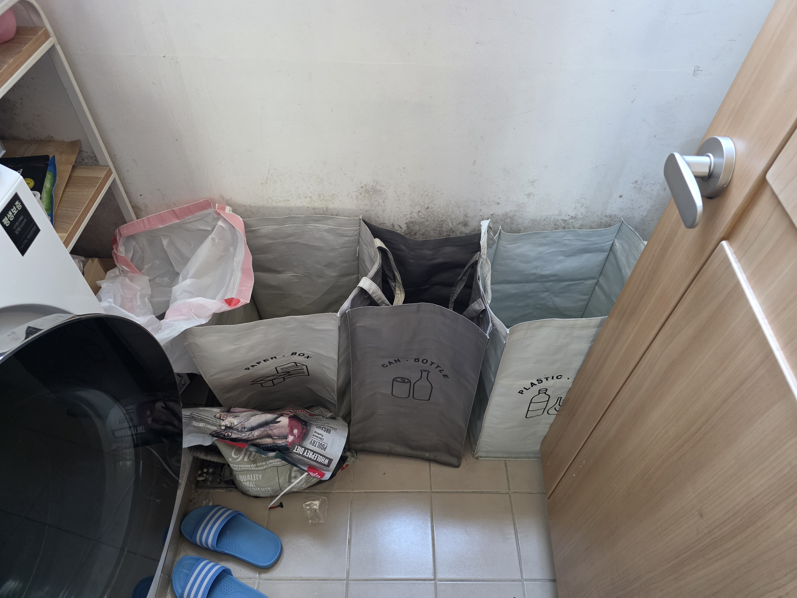
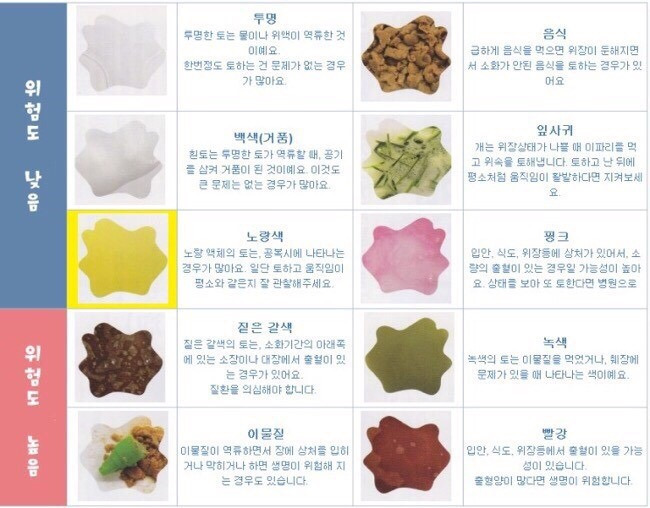

1
물
- 브리타 물통에 물을 담아 주세요.
- 물그릇 4개에 남은 물을 버리고 그릇을 헹궈 주세요.
- 정수한 물을 채운 뒤 원래 위치에 놓아 주세요.

공개용 돌봄 매뉴얼
하루 한 번 물과 화장실을 먼저 챙겨 주세요. 팡구는 겁이 많아서 천천히 기다려 주면 좋아요.

우선 확인
주소, 출입 방법, Wi-Fi 정보는 이 공개 페이지에 담지 않았어요. 별도로 전달받은 안내를 확인해 주세요.
돌봄 순서
1

2

3
4
에탄올과 물티슈는 식탁에 있어요.

5


바로 연락
사료만 한 번 토한 경우와 구분이 어려우면 사진을 찍어 보호자에게 먼저 연락해 주세요.
